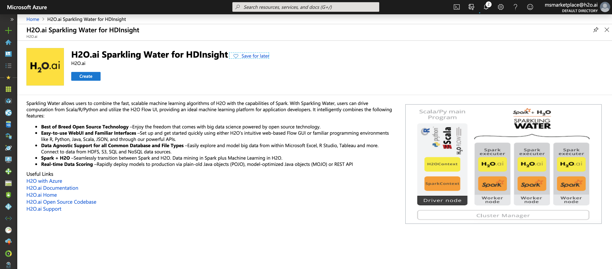
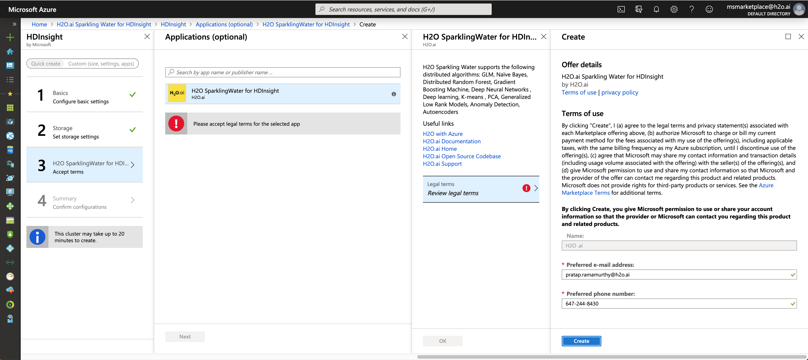
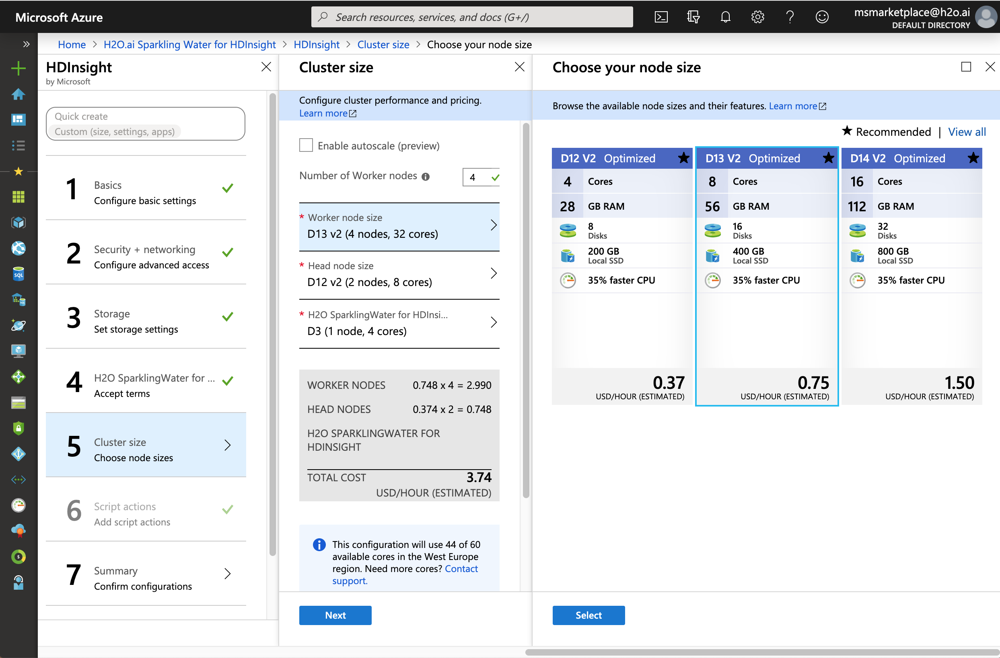
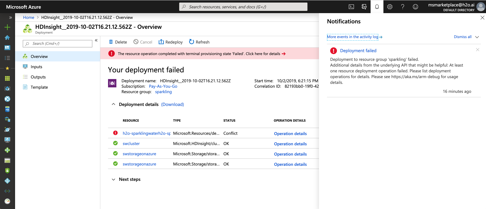
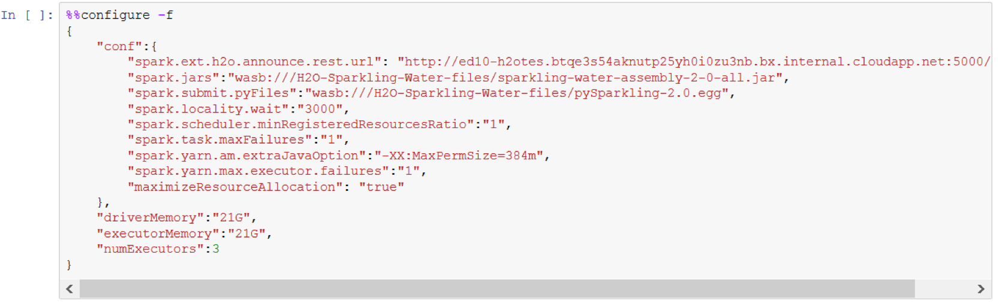
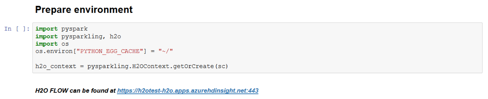

Using Sparkling Water with Microsoft Azure HDInsight - Beta¶
Microsoft Azure provides an important collection of cloud services, such as serverless computing, virtual machines, storage options, networking, and much more. Azure provides the tools for a user to create a Data Science environment with Sparkling Water.
This section describes the H2O Application for HDInsight on Microsoft Azure.
Note: This feature is currently in Beta and should be used for testing purposes only.
H2O Artificial Intelligence for Azure HDInsight¶
The H2O Artificial Intelligence for Azure HDInsight is an application you can install during the creation of a new HDInsight cluster on Azure. This solution will install Sparkling Water on your Spark cluster, allowing you to exploit all the benefits from both Spark and H2O. The cluster can access data from Azure Blob storage and/or Azure Data Lake Store in addition to all the standard data sources that H2O supports. It also provides Jupyter Notebooks with pre-baked H2O examples for an easy jumpstart.
Create the H2O AI for Azure HDInsight¶
Requirement: Python 2.7 or 3.
Follow the steps below to create a new H2O Artificial Intelligence for Azure HDInsight.
In your Azure portal at https://portal.azure.com, search for H2O, and select H2O Artificial Intelligence for HDInsight.
Click the Create button, and follow the UI instructions.
In the next screen, under Basics:
Change Cluster Type to Spark 3.1.3. (Note that Sparkling Water is currently configured to work only on Spark 3.1 and above.)
Change Cluster Login username and password. These are used to connect to your cluster.
Change SSH Username and password. These are used to connect directly to the VM present in the cluster.
Create or specify your Resource Group
On the Storage tab, you can configure either an Azure Storage Account or an Azure Data Lake Store Gen2 Account. This is where your HDFS system will be located.
Note: Refer to the following links for more information about the Azure Storage and the Azure Data Lake Store Gen2:
On the H2O SparklingWater for HDInsight tab, select and accept the Terms of Use for H2O.
On the Summary tab, you can edit the number of workers nodes you want on your HDI Cluster. Note that you can resize your cluster any time after creation. If you want to change the machine profile that HDI Cluster will run on (Worker Node Size), you should choose only among the recommended ones.
On the Summary tab, click Create to begin the cluster creation. Note that the cluster creation process can take up to 30 minutes.
Watch the Notifications tab for the progress of the deployment. If the deployment fails, delete created resources and repeat the points above.
Connect to your Jupyter Notebooks through https://<ClusterName>.azurehdinsight.net/jupyter, and log in using the Cluster Login username and password that you previously created.
In Jupyter, you will see 3 folders: H2O-PySparkling-Examples, PySpark Examples, and Scala Examples. Select H2O-PySparkling-Examples.
The first step when creating a new notebook is to configure the Spark environment. This information is included in all H2O examples on Jupyter.

Start the H2O Cluster.

You are now ready to start building your H2O Models.
Note: To connect to H2O Flow, go to https://<ClusterName>-h2o.apps.azurehdinsight.net:443.
Troubleshooting Tips¶
If the H2O Flow link does not work and only shows the H2O documentation after the H2O cluster creation, clean your browser cache and try again.
Make sure that the cluster has enough resources to allocate to your Spark application. Do not allocate more than 75% of the worker’s RAM to the spark application, otherwise, it can fail.
For more information about the cluster available resources, go to http://<ClusterName>.azurehdinsight.net.